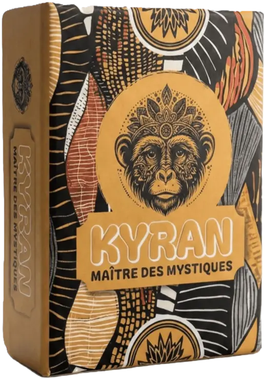
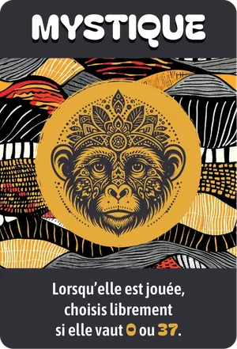
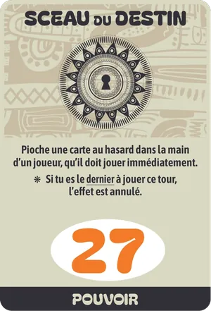
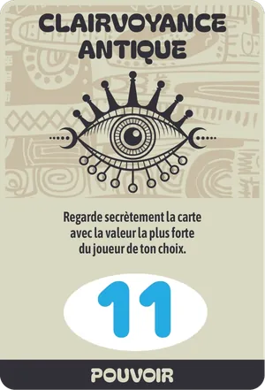
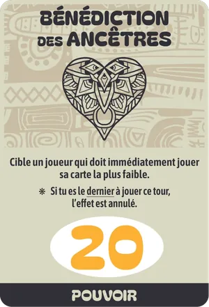
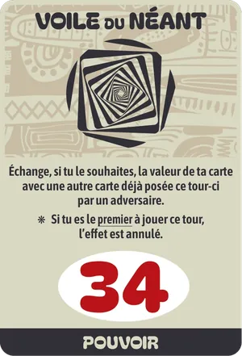
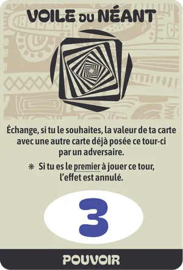

Dossier de presse · mis à jour le {{DATE}}
Maître des Mystiques · le jeu de plis où le pari est obligatoire

Annoncez le nombre exact de plis que vous allez gagner. Ni plus, ni moins. La somme des paris ne tombe jamais juste : à chaque manche, quelqu'un se trompe.





Communiqué de presse
{{DATE}}. Sorti le 31 janvier 2026, KYRAN, Maître des Mystiques, est un jeu de cartes de plis et de paris pour 3 à 6 joueurs, dès 8 ans. Une partie dure environ 30 minutes. Il modernise le Tarot Africain, aussi appelé Whist 22, joué en famille de l'Afrique de l'Ouest aux Antilles.
Le but n'est pas de gagner le plus de plis, mais d'en gagner exactement le nombre annoncé. La somme des paris ne peut jamais égaler le nombre de plis : au moins un joueur se trompe donc à chaque manche. Une main faible n'est pas perdue : parier zéro et ne faire aucun pli est un pari réussi.
Chaque erreur coûte des cartes Vie, posées devant le joueur à la place d'une feuille de score. Les manches raccourcissent (7 cartes, puis 6… jusqu'à 2), puis vient la manche Mystique : une seule carte tenue sur le front, que tout le monde voit sauf son propriétaire. Quatre pouvoirs et la carte Mystique, qui vaut 0 ou 37, peuvent renverser un pli.
KYRAN est conçu et édité par Corentin Sence, auteur indépendant, avec des illustrations de Crea by Floh : safran, encre, terracotta et motifs inspirés du wax. Depuis sa sortie, le jeu a été présenté en vidéo par Ludovox (Ludochrono) et Le Pirate Ludique, partagé par des bars à jeux et des joueurs sur Instagram, et il se découvre gratuitement en ligne grâce à une initiation jouable dans le navigateur.
KYRAN est vendu 9,99 € sur kyran-jeu.fr, 14,90 € sur Amazon.fr, et sur Etsy.
| Titre | KYRAN, Maître des Mystiques |
| Auteur, éditeur | Corentin Sence |
| Illustrations | Crea by Floh |
| Genre | Plis, paris et bluff |
| Joueurs | 3 à 6 · 30 min · dès 8 ans |
| Matériel | 45 cartes de jeu (36 Nombre, 8 Pouvoir, 1 Mystique), 30 cartes Vie, 7 cartes de règles |
| Boîte | Rigide, 11,5 × 8,5 × 2,8 cm, 175 g, cartes toilées |
| Prix | 9,99 € kyran-jeu.fr · 14,90 € Amazon |
| Sortie | 31 janvier 2026 |

La Mystique vaut 0 ou 37, au choix de celui qui la pose.
Ils en parlent
« Un jeu fluide, malin et plein de petits rebondissements qui modernise très bien le genre. »@kev_clz_aimelesjeux, Instagram, mars 2026
« Simple sur le papier, redoutable en vrai. […] Un beau renouveau du jeu de plis ! »@un_vrai_jeu_d_enfant, Instagram, mai 2026
4,7/5 sur Amazon.fr33 évaluations, relevé de novembre 2026
Visuels HD, logos, vidéo et règles : kyran-jeu.fr/presse/kyran-kit-presse.zip
Règles complètes : kyran-jeu.fr/regle.html · Essai gratuit : kyran-jeu.fr/minijeu.html
Exemplaire de test, interview, visuels sur mesure : contact@kyran-jeu.fr (réponse sous 48 h ouvrées)
Instagram @kyran.jeu · YouTube @Kyran-jeu